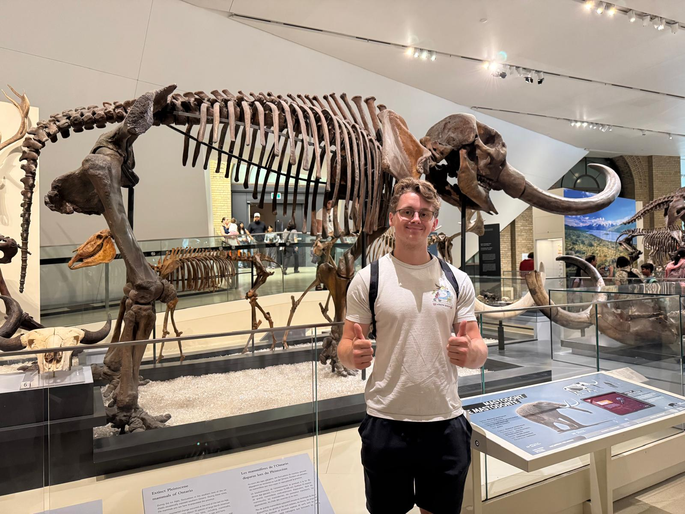
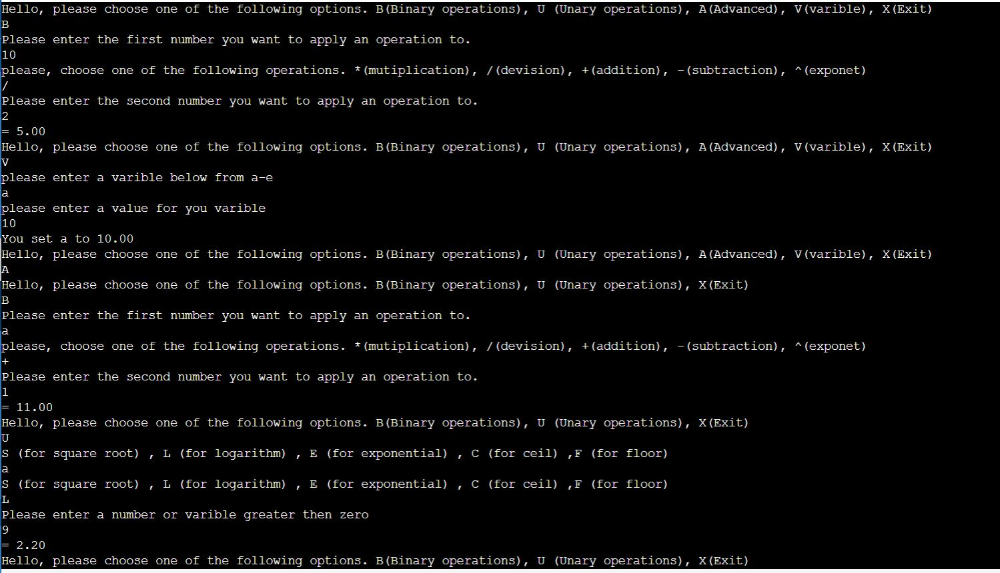
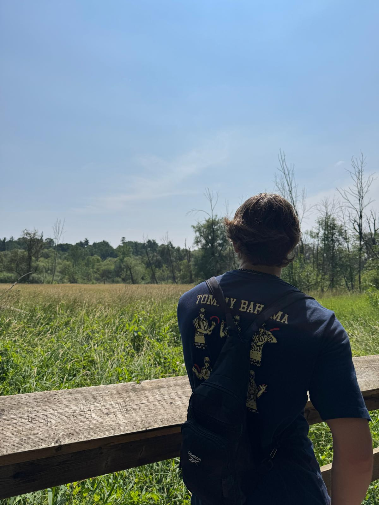

Passionate Learner

I am always trying to learn new things, from learning to knit to becoming a better artist and improving my physical fitness. I bring this outlook to my teaching by continuously trying new ideas, creating fun experiences, and seeking out new adventures for my students.
Technology Advocate

Having a background in computer science has made me extremely passionate about learning how technology can make me a better educator. For example, this very website was programmed by me. In the future, I could use these skills to create useful course websites and other digital resources for my students.
Nature Lover

I have a great love for nature and often go on long hikes and seek out different outdoor opportunities. In the future, I would like to incorporate more nature into my lessons, such as going outside to read or teaching different science lessons through outdoor activities.